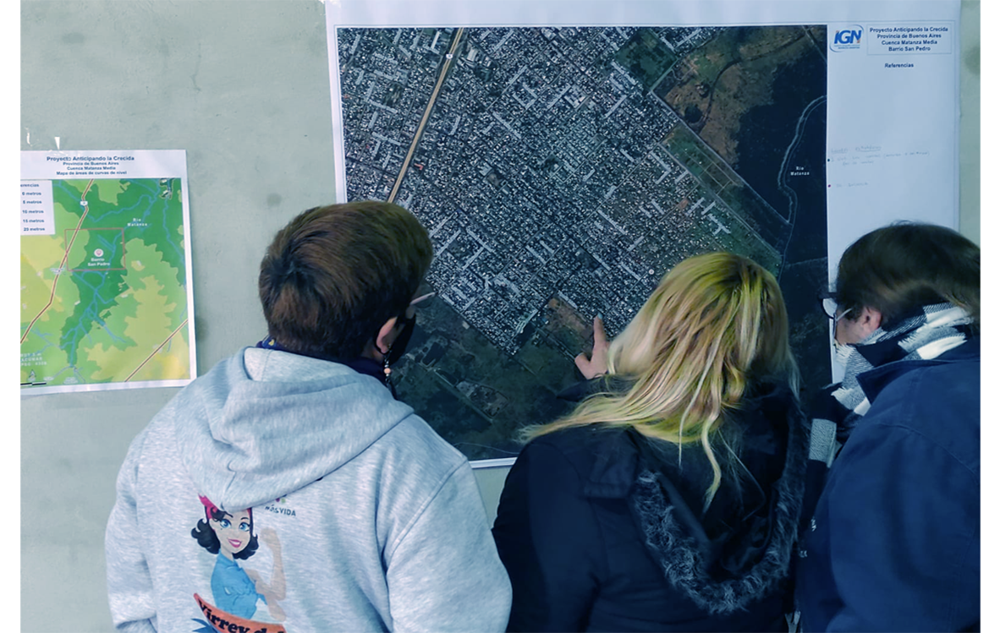

Proyecto interdisciplinario e intersectorial, cuyo objetivo general es contribuir en la comprensión de la gestión de riesgos ante desastres asociados a eventos hidro-meteorológicos en el Área Metropolitana de Buenos Aires, la Cuenca del Río Luján y Río Areco y el Delta del Paraná entre otros lugares.
Sección del Visor de mapas de Anticipando la Crecida VISOR
El equipo se compone de personal técnico, investigadores, docentes y estudiantes pertenecientes a las siguientes instituciones:

Los talleres se realizaron con vecinos y comunidades educativas de distintos lugares con elevada recurrencia de inundaciones y la presencia de barrios informales con población vulnerable ante eventos hidro-meteorológicos durante los períodos de sudestadas y lluvias fuertes.
Durante los encuentros de talleres participativos se presentan mapas en alta definición del barrio para que la comunidad local pueda expresar el conocimiento que tiene de su territorio. Los mapas se elaboran con fotografías aéreas de alta resolución (0,5 m – VEXCEL ULTRACAM XP focal de 100mm), provistas por el Instituto Geográfico Nacional, para que los vecinos puedan volcar al mapa cómo perciben ellos el riesgo de inundaciones y el conocimiento acerca de cómo se mueve el agua el territorio. Para conocer e identificar los riesgos, el mapa permite ubicar lugares vulnerables (viviendas, escuelas, etc) a estos peligros. Ante esta herramienta la comunidad y a las autoridades pueden tomar decisiones a través de potenciar las medidas de prevención (Rodríguez Martínez, 2011). La mejor fuente de información para el trazado del mapa de riesgo de una localidad son las personas (actores) que viven en esa área (Sendai, 2015) que conocen su entorno. Además, ellas representan el núcleo del proceso, participando activamente según su interés, disponibilidad, actitudes, capacidades y formación en las diferentes etapas del proceso (CIMAS, 2010).
A continuación se detallan los barrios y las escuelas donde se han realizado talleres participativos
Barrio La Ribera, Municipio de Quilmes, Provincia de Buenos Aires, Septiembre-Octubre 2014
Se trabajó con dos tipos de mapas participativos con fotografías aéreas de La Ribera provistas por el IGN. El primer mapa se construyó junto con 40 alumnos de la escuela secundaria Nº 76 y el segundo con 15 vecinos de entre 20 y 99 años.
Talleres en el barrio Nueva Esperanza, Municipio de Lomas de Zamora, Provincia de Buenos Aires,
Abril-Mayo 2015
Barrio que limita con los municipios de La Matanza y Esteban Echeverría. Para el año 2000 era un terreno baldío y en años sucesivos se fueron asentando de forma ilegal las primeras familias. Actualmente los terrenos están completamente urbanizados. Los talleres se desarrollaron con cerca de 50 vecinos adultos.
Gregorio de Laferrere, Municipio de La Matanza, Provincia de Buenos Aires, Julio 2015
Al igual que Nueva Esperanza, Laferrere se encuentra constantemente expuesto a inundaciones por parte de los desbordes del Río Matanza-Riachuelo. Para conocer la situación en Laferrere se realizaron talleres sobre el tema con 88 alumnos de 4to. y 5to. año de las Escuelas Media Nº28, Nº130 y Nº135.
Barrio de Saavedra, CABA, Agosto 2015
Luego de la gran inundación de Abril 2013 se conformó una asamblea de vecinos para reclamar al Gobierno de la Ciudad de Buenos Aires obras inmediatas. Anticipando La Crecida supo de esta iniciativa y se coordinó un taller con ellos en Agosto 2015.
Piñeiro, Municipio de Avellaneda, Provincia de Buenos Aires, Agosto 2017
El 8 de agosto de 2017 se realizó un nuevo taller de mapeo de zonas inundables en la localidad Piñeiro de la municipalidad de Avellenada, Buenos Aires. El taller se realizó con más de 40 estudiantes de 4to y 5to grado de la escuela primaria Nº53. Los chicos y chicas y identificaron zonas con posibilidades de inundación, se dialogó sobre las causas y se planificó para 2018 la instalación de un pluviómetro en la escuela para que realicen mediciones de lluvia propias.
Ciudad Evita, Municipio La Matanza, Provincia de Buenos Aires, Noviembre 2017
En 2017 Anticipando La Crecida se propuso crear una red de medición de lluvia en escuelas como una estrategia para incentivar a los jóvenes monitorear el clima local y así fortalecer un sistema de alerta temprana desde la propia comunidad. En este marco, en noviembre 2017, se instaló el primer pluviómetro en la zona de AMBA en la Escuela Nº186 de Ciudad Evita, La Matanza. En esta misma escuela, se realizó un taller con estudiantes de 4 y 5to grado de primaria donde se aprendió a medir lluvia con un pluviómetro y a tomar registros. La información que los estudiantes colectan se vuelca a una web para ir construyendo el archivo histórico de lluvia del barrio.
Además, en el taller se realizó un mapeo del barrio para identificar zonas inundables y lugares conocidos por padres y estudiantes.
San Antonio de Areco, Provincia de Buenos Aires, Noviembre 2017
Para acompañar las iniciativas del Municipio de San Antonio de Areco de trabajar de forma integral la Gestión de Riesgo de Desastres asociadas a las inundaciones del Río Areco, desde Anticipando La Crecida se realizaron talleres en las escuelas N°1 Bernardino Rivadavia y Escuela Municipal Manuel Belgrano con una gran cantidad de alumnos de 11 y 12 años.
Bibliografía
Briche, E., Gatti, I., Duville, M., Menalled, M., Robledo, F., Moreira, D., Re, M., Falco, M., Storto, L., Lecertua, E., Kazimierski, L. & Saulo, A. (2015). “Anticipando la crecida”: ¿Cómo integrar el conocimiento local y la prevención? Casos de La Ribera (Partido de Quilmes), Laferrere (Partido de la Matanza) y Nueva Esperanza (Partido de Lomas de Zamora), Provincia de Buenos Aires, Argentina. Seminario Internacional Ciencias Sociales y Riesgo de Desastres en América Latina: Un encuentro inconcluso. Buenos Aires, Argentina. 15-17 de septiembre de 2015.
CIMAS (2010). Metodologías participativas. Manual, Observatorio Internacional de Ciudadanía y Medio Ambiente Sostenible, Madrid, España, 91p.
Hernández V. & Fossa Riglos M.F. (2018). “Building a climate knowledge co-production dialogue: an implicated science experience”. SPARC General Assembly, 1-5 October, Kyoto, Japan.
IPCC (2012). Managing the Risks of Extreme Events and Disasters to Advance Climate Change Adaptation. Field, C.B., V. Barros, T.F. Stocker, D. Qin, D.J. Dokken, K.L. Ebi, M.D. Mastrandrea, K.J. Mach, G.-K. Plattner, S.K. Allen, M. Tignor, and P.M. Midgley (Eds.) Available from Cambridge University Press, The Edinburgh Building, Shaftesbury Road, Cambridge CB2 8RU ENGLAND, 582 pp.
Marco de Sendai para la Reducción del Riesgo de Desastres 2015-2030. Resolución aprobada por la Asamblea General de Naciones Unidas el 3 de junio de 2015 (A/RES/69/283*)
Re, M., Storto, L., Lecertua, E., & Kazimierski, L. (2015). Anticipando la Crecida: Inundaciones en La Ribera de Quilmes, Mapas de nivel y duración de inundaciones. Informe INA 01-354-15. Instituto Nacional del Agua.
Rodriguez Martinez, E. (2011)”Los Mapas Participativos-Comunitarios en la Planificación del Desarrollo Local”, Maracay, Universidad Pedagógica Libertador, 11p.
World Bank (1996) The World Bank Participation Source Book, Environmental Management Series, World Bank, Washington, 259p.